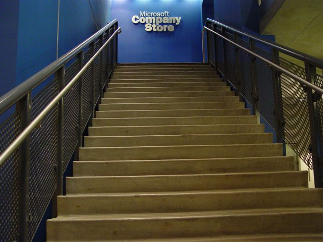
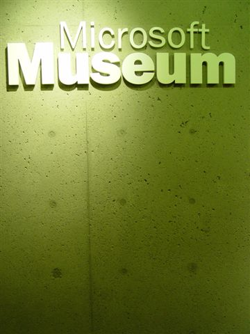
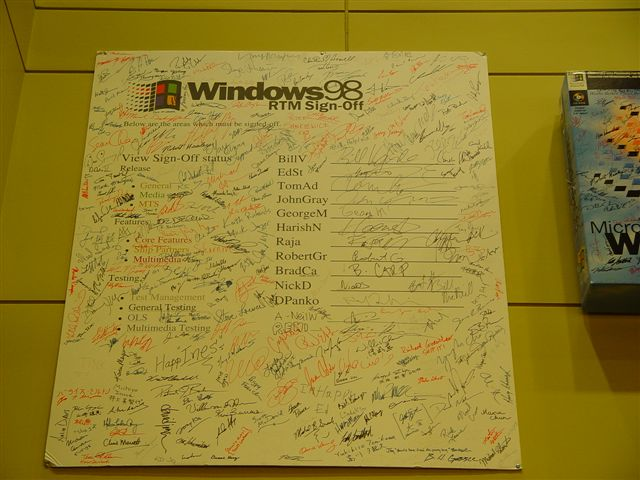
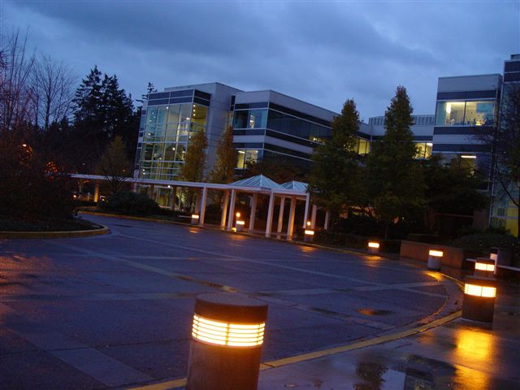
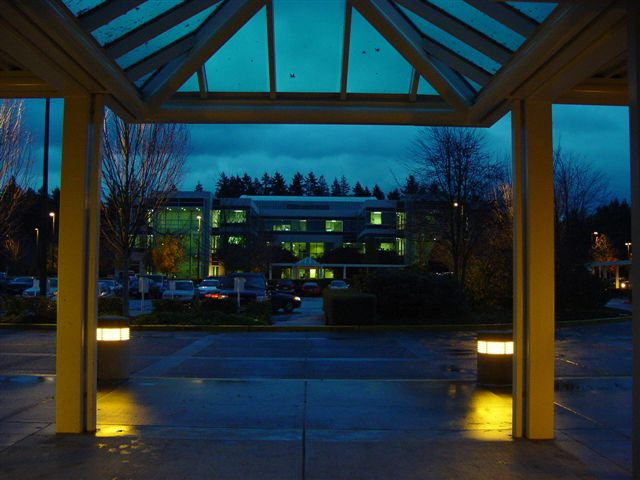
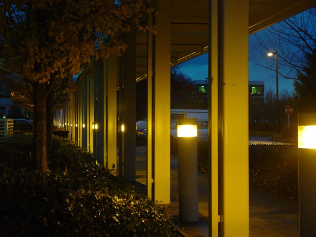
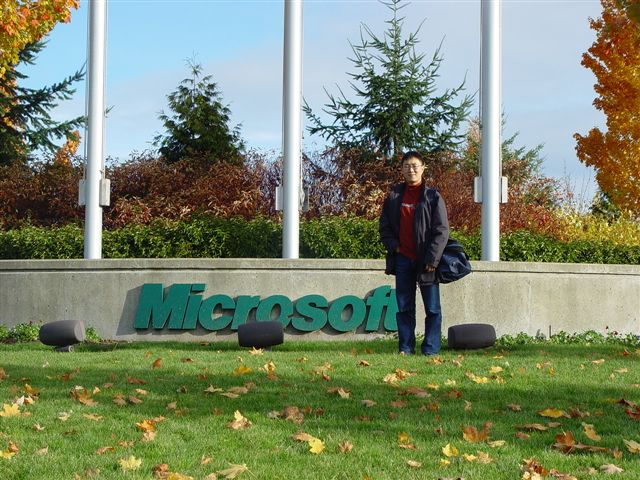
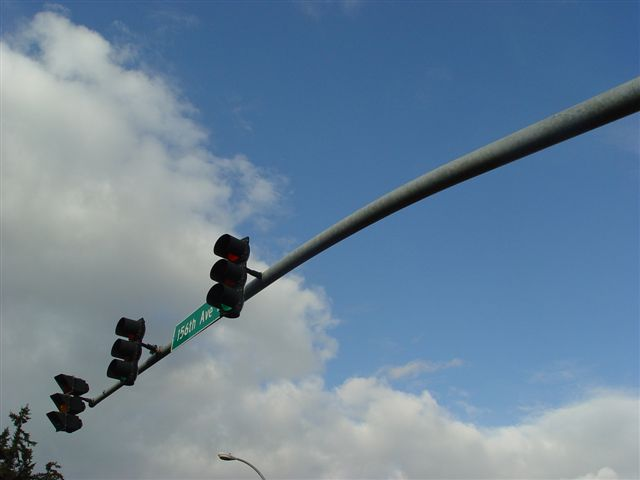

There are many good places to go on Microsoft campus. The first one will be the company store. Ask your Microsoft friends to take you there. There are lots of good stuff there, including Microsoft-logo t-shirts and clothes, Microsoft-logo gift and other interesting daily-used goods like umbrella, and bags -- all with Microsoft logo on it. But the most attractive goods in the store is the debated software and hardware

It is one of the benefits for Microsoft employees and alumni to buy Microsoft products at lower price. For Microsoft mouse (optical or wireless) and keyboards, it is always $25 for each. For most software, it is $15 to $55 which is also cheaper than outside - but, even Microsoft employee needs to pay for Microsoft products that are used outside their office and home. Each peace is marked with the employee ID. It is explicitly forbidden to be resoled or transferred.

The other is the Microsoft museum. It opens from 9:00 AM to 7:00 PM. You can find great piece of software and hardware on the history of Microsoft. It has both the oldest Altair 8080 computer for which Bill Gates wrote BASIC in 1975, and the latest technology like Tablet PC and XBox.
There are lot of great stuff in the lobby of building 27 North. You will see the Windows 98 sign-off sheet and the first production disc - the golden master of Windows 98.

The campus looks quite good at night too. Take a look at this photo I took when I was waiting for a shuttle.

This is building 28 taken from gate of building 27.

The lights of roads connects the three buildings together.

This is the classic place to take pictures. It is the flag pole before building 1 to 6. It is the first flag poles on the campus and thus become the symbolic sign Microsoft campus. If you want to take a picture at Microsoft campus, this is the place.

The last one is the 156th Ave. It split the campus into two parts and lot of building are built around this avenue. It marks the distance of the Microsoft campus from the Washington bay. The first avenue along the Washington bay is called 1st Ave. Then the north-south roads after the sequential numbers. When it is named 156th Ave, you arrives in Microsoft. It is already far from west coast.

See also:
Flight From SFO to PVG
Microsoft Campus Photo
Seattle
Sleepless in Seattle